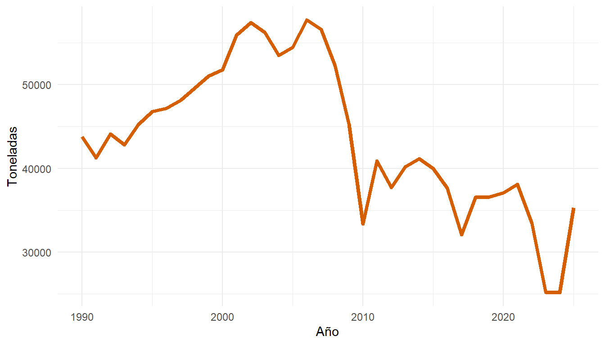
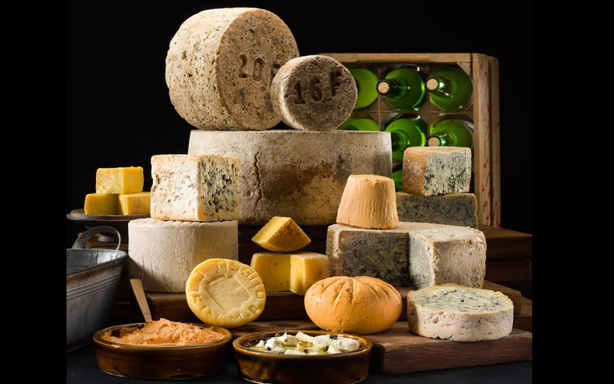
Resumen
Este trabajo revisa la publicacion que hice en LinkedIn el 18 de abril de 2025, actualizando algunos datos de producción con la información disponible en Eurostat para 2024. Los datos referentes a algunos países, así como al número de empresas queseras sigue siendo difícil de encontrar. Los nuevos datos no introducen diferencias significativas en las conclusiones.
Se examina la producción de queso en Asturias, incluyendo los quesos amparados por Denominación de Origen Protegida (DOP) e Indicación Geográfica Protegida (IGP), y se contrasta con datos de España y Europa. La información, obtenida de diversas fuentes online, que se incluyen en las referencias, se centra en el análisis del queso producido y el número de empresas. No se incluyen en el estudio otras variables económicas como inversión, empleo o contribución al PIB debido a la falta de datos detallados del sector. La información referente al número de empresas queseras es bastante precisa en Asturias, pero muy desigual o inexistente en el resto de las áreas estudiadas. La información sobre la producción de queso está en el mismo caso, dificultando la obtención de conclusiones precisas. Además, no ha sido posible cuantificar con detalle el volumen de producción fuera de la certificación DOP/IGP.
El análisis revela que la producción de queso de Asturias no se sitúa como la más elevada a nivel nacional o europeo, ni en el total ni en la de quesos catalogados. Algunos quesos frescos fabricados por grandes empresas han tenido y siguen teniendo un papel clave en la producción regional; actualmente representan más del 40% de la producción total de queso en la región.
Asturias destaca por una relativa alta densidad de empresas queseras, calculada en este estudio como el número de empresas por 1000 \(km^2\) (especialmente en el ámbito de los quesos con certificación DOP/IGP, sólo por detrás de Suiza). Dado que muchas de estas empresas hacen quesos diferentes, se habla en ocasiones de que Asturias es la mayor mancha quesera de Europa, para indicar esta gran variedad de productos.
Aunque esta diversidad de quesos es notable, el volumen medio de producción por establecimiento es reducido; el valor añadido real derivado de esta variedad de productos y formatos resulta complejo de determinar. La prevalencia de pequeñas producciones, particularmente artesanales, podría suponer un factor limitante para el crecimiento y la sostenibilidad del sector, tanto por la falta de masa crítica para generar los márgenes de explotación suficientes, como por la importancia creciente de los aspectos ambientales y la dificultad para eliminar los residuos generados en una estructura de producción muy repartida y difusa.
Parece necesaria la elaboración de un plan estratégico sectorial que identifique y potencie los atributos distintivos del queso asturiano y refuerce los quesos catalogados (DOP e IGP) y los quesos de autor, entendiendo como tales aquellos que responden a criterios de alta calidad. Dicho plan debería establecer también criterios de diferenciación precisos entre los quesos de tradición asturiana y los elaborados en la región sin vinculación con su herencia cultural y gastronómica, y entre las figuras de calidad regulada y la producción artesanal. A ello habría que añadir medidas para la resolución de los problemas ambientales del sector y mecanismos que favorezcan la concentración empresarial en unidades de mayor tamaño.
Introducción
Este documento es una aproximación a la descripción de la producción quesera asturiana mediante algunos índices indirectos, construidos a partir de los datos de producción y del número de empresas disponibles para Asturias, España y varios países europeos.
Análisis
La producción de queso en Asturias
El Catálogo general de quesos elaborados en Asturias, en su última edición1, referencia con todo detalle las empresas y quesos fabricados en Asturias; recoge un total de 298 referencias producidas en 82 establecimientos. En su edición anterior, de 2023, citaba 56 que corresponden a productores de denominación catalogada (DOP+IGP). Como la edición de 2025 no detalla esta cifra, mantendré la de 2023 en el análisis, ya que no ha habido en este tiempo cambios sustanciales.
Estas 298 referencias incluyen todo tipo de quesos, desde artesanos a industriales, fundidos, quesos crema y otros, con el detalle de formatos y marcas, y es la visión más actual de la realidad quesera asturiana. El catálogo ha tenido también el acierto de incluir quesos desaparecidos o en vías de desaparición, que también forman parte de esta cultura quesera asturiana. No obstante, no proporciona el volumen de producción total ni de las diferentes variedades, si exceptuamos los quesos con denominación catalogada (DOP+IGP)
En cuanto al número de empresas queseras, el Ministerio de Agricultura, Pesca y Alimentación (MAPA), en su Anuario de Estadísticas del año 20232, constata la existencia en España de 1.620 empresas lácteas y 1.990 centros de producción. No especifica el número de empresas queseras ni el volumen total de queso producido. Según datos de la Agencia de Ciencia, Competitividad Empresarial e Innovación Asturiana (SEKUENS)3, España contaba en 2024 con 1.577 empresas del sector lácteo activas; de ellas, el 5,39% están implantadas en Asturias. Esto equivale a 85 empresas; muy cerca del valor de 82 establecimientos proporcionados por el Catálogo mencionado antes;
La Tabla 1 presenta los datos de la producción total de queso en Asturias actualizada a 2025, según la Sociedad Asturiana de Estudios Económicos e Industriales (SADEI)4.
Desde 2010, la producción de queso en Asturias se mantuvo en torno a 35.000-40.000 toneladas hasta 2022. Entre 2021 y 2023 se registra una caída notable debido principalmente al cierre de la fábrica de Danone en Salas en 20225, que traslada la elaboración del queso fresco Danonino a otros centros en Francia. A partir de 2023, la producción regional se estabiliza en unas 25.000 toneladas, lo que representa un 4,6% del total nacional, y en 2025 remonta a 35.310 toneladas, cifra que recoge probablemente el relanzamiento de la actividad en la nueva fábrica de Royal A-Ware en Salas (antigua Danone), especializada en la producción de mozzarella.. Este volumen incluye el queso fresco Burgo de Arias y otros quesos frescos fabricados por Mantequerías Arias en su planta de Vegalencia (Soto de Ribera), que elabora anualmente unas 9.000 toneladas de queso (un 36% del total de la región). Si descontamos esta cantidad del total dado por SADEI, podemos situar el volumen de los quesos tradicionales asturianos en torno a las 15.000 toneladas, incluyendo los quesos DOP e IGP.
El detalle de la producción quesera asturiana fuera de las denominaciones de origen no se recoge en ningún informe oficial. Es el caso de quesos importantes y conocidos, algunos tradicionales como Vidiago, Pría, La Peral, Peñamellera, Abredo y otros, y también de los quesos que podrían ser incluidos en los llamados quesos de autor, como Rey Silo, Lazana, Varé o La Chivita, y multitud de quesos artesanos producidos en pequeñas queserías, cuyo volumen resulta imposible de estimar.
La Figura 1 muestra la producción de queso desde 1990. A mitad de los años 2000 se identifica una caída importante de los volúmenes de producción, probablemente reflejo de varios factores, como la crisis de 2008, unida al efecto de la reordenación de la PAC entre 2003 y 2009 y a la relocalización por Mantequerías Arias de una parte importante de la fabricación de Burgo de Arias en la nueva factoría de Burgos, hacia 2006. También se ve claramente el cese de actividad de Danone en Salas en 2023, y el relanzamiento de la actividad por Royal A-Ware en 2025, como comentábamos anteriormente.
| Año | Queso producido (toneladas) |
|---|---|
| 2015 | 39.983 |
| 2016 | 37.685 |
| 2017 | 32.095 |
| 2018 | 36.542 |
| 2019 | 36.582 |
| 2020 | 37.085 |
| 2021 | 38.129 |
| 2022 | 33.502 |
| 2023 | 25.242 |
| 2024 | 25.168 |
| 2025 | 35.310 |
La producción y consumo de queso en España
Según la Encuesta Anual de Industrias Lácteas del MAPA6, la producción nacional de queso en 2024 fue de 538.300 toneladas.
Los valores de producción de los quesos con DOP o IGP se conocen con detalle, porque estos datos están recogidos por los propios Consejos Reguladores, y también por la Subdirección General de Control de la Calidad Alimentaria y Laboratorios Agroalimentarios del MAPA7.
La Figura 2 muestra los quesos catalogados españoles con mayor producción en 2023 (más de 300 toneladas/año) según los datos ofrecidos por el MAPA en el informe Datos de las Denominaciones de Origen Protegidas (D.O.P.), Indicaciones Geográficas Protegidas (I.G.P.) y Especialidades Tradicionales Garantizadas (E.T.G.) de Productos Agroalimentarios8. De los quesos con DOP+IGP asturianos, sólo el Cabrales aparece en la tabla, con 361 toneladas en 2023. El detalle de los quesos DOP e IGP españoles puede consultarse en la Tabla 7, que figura en anexo.
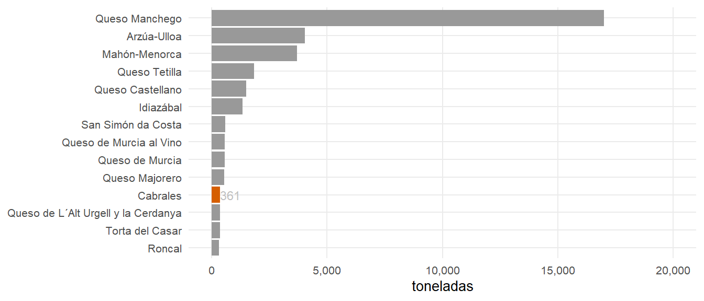
La Figura 3 muestra la producción y el número de queserías por comunidades autónomas. Asturias tiene un elevado número de queserías DOP, sólo por debajo del País Vasco y Castilla-La Mancha, aunque el volumen total producido no es alto.
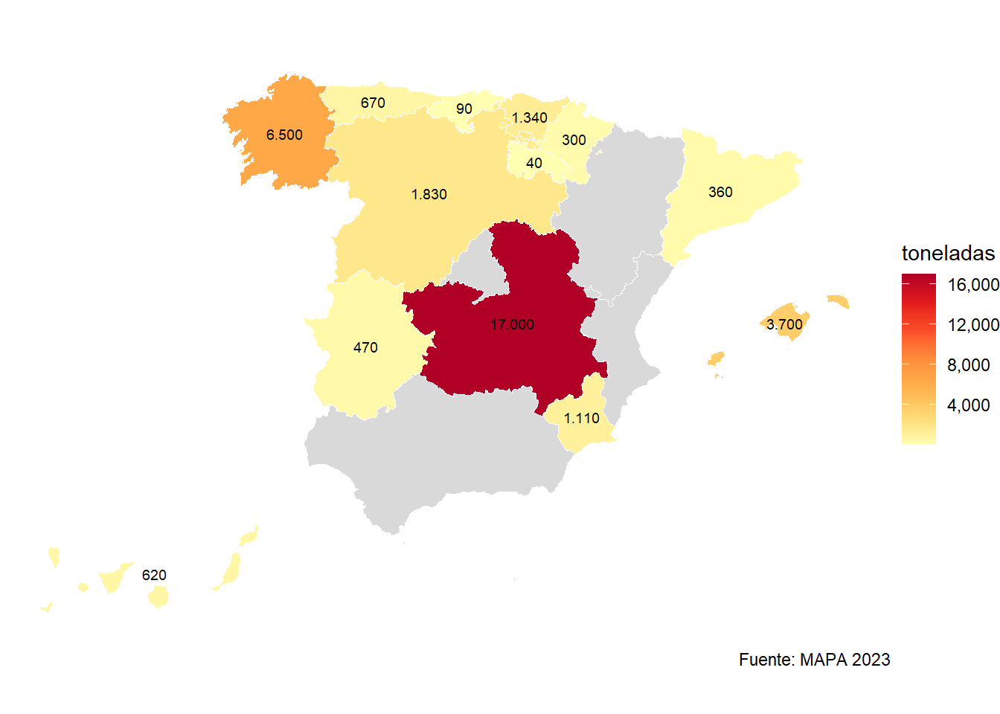
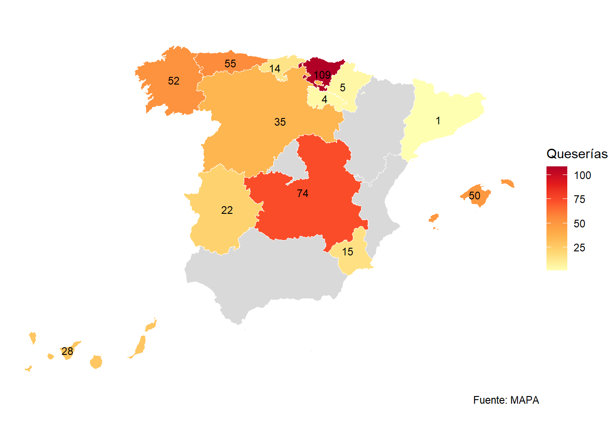
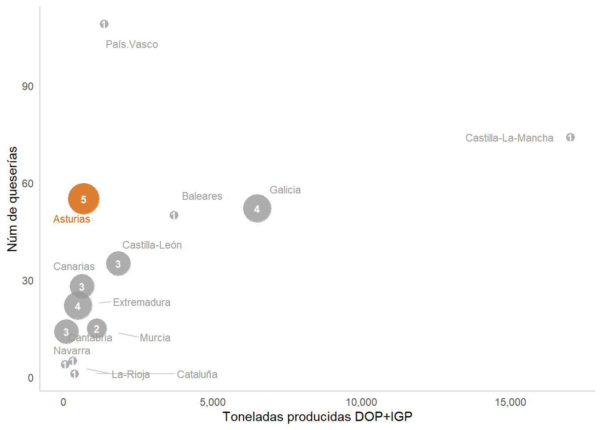
Respecto al consumo de queso por CCAA, el último Informe anual del consumo alimentario del MAPA para 20237, estima el consumo total de queso en España en unas 350 mil toneladas, con un consumo per cápita de 7,56 kg. (Tabla 2). Asturias, con un consumo per cápita de 8,1 kg, se sitúa en la zona media‐alta de la tabla.
| Comunidad Autónoma | % poblacion | % kilos | Consumo per cápita |
|---|---|---|---|
| Canarias | 4.6% | 5.9% | 10,3 |
| Illes Balears | 2.5% | 2.5% | 8,8 |
| Cataluña | 16.2% | 17.1% | 8,4 |
| Comunitat Valenciana | 10.9% | 12.0% | 8,3 |
| Región de Murcia | 3.0% | 3.4% | 8,2 |
| Galicia | 5.8% | 6.3% | 8,1 |
| Principado de Asturias | 2.4% | 2.4% | 8,1 |
| Comunidad de Madrid | 14.0% | 13.6% | 7,3 |
| Extremadura | 2.3% | 2.4% | 7,1 |
| Pais Vasco | 4.8% | 4.3% | 6,9 |
| Aragón | 2.9% | 2.5% | 6,8 |
| Andalucía | 17.5% | 16.5% | 6,7 |
| Castilla Y Leon | 5.4% | 4.7% | 6,7 |
| La Rioja | 0.7% | 0.6% | 6,6 |
| Cantabria | 1.3% | 1.0% | 6,5 |
| C. Foral de Navarra | 1.4% | 1.0% | 6,3 |
| Castilla-La Mancha | 4.2% | 3.7% | 6,1 |
Para analizar el consumo de queso por Comunidad Autónoma, comparo la participación en el consumo con su cuota poblacional, calculada ésta como el porcentaje de población de cada Comunidad Autónoma sobre la población total. La Figura 5 muestra la diferencia entre el porcentaje de consumo y la cuota poblacional, frente al consumo per cápita; destaca el alto consumo de queso en Canarias, y el bajo consumo de Andalucía y Castilla-La Mancha. Las CCAA que están sobre la línea de división vertical (Asturias y Baleares) tienen un consumo de queso se corresponde con su cuota poblacional. El diámetro de los puntos es proporcional a la población de cada CCAA.
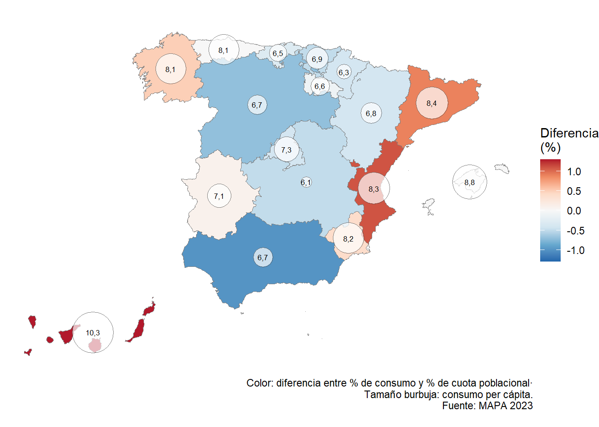
La producción de queso en Europa
Los datos de la producción de queso en España y Europa (totales y catalogados), recogidos de diversas fuentes que se relacionan al final del artículo, se han agrupado en dos tablas:
La Tabla 3 presenta la producción quesera en varios países europeos, incluyendo los volúmenes totales y los catalogados con DOP o IGP. En esta tabla recojo también la población y la superficie de estos países. He eliminado los países europeos para los que no dispongo de datos de producción DOP.
| País | Población | Km² | Prod. queso (Ton) | Prod. queso DOP+IGP (Ton) | Quesos DOP+IGP | Empresas queseras | Empresas DOP |
|---|---|---|---|---|---|---|---|
| Alemania | 84.524.000 | 357.580 | 2.400.000 | 150.000 | 13 | 2.700 | 50 |
| Francia | 68.000.000 | 551.695 | 1.900.000 | 233.782 | 57 | 750 | 484 |
| Italia | 59.000.000 | 301.340 | 1.400.000 | 620.000 | 52 | 1.800 | 800 |
| Paises Bajos | 17.877.000 | 41.543 | 972.000 | 303.000 | 12 | 300 | 30 |
| Polonia | 37.700.000 | 312.685 | 893.780 | 1.200 | 5 | 143 | 12 |
| España | 47.700.000 | 505.990 | 534.000 | 34.045 | 30 | 1.640 | 464 |
| Dinamarca | 5.944.000 | 42.933 | 518.000 | 30.000 | 4 | 200 | 11 |
| Irlanda | 5.300.000 | 70.273 | 285.400 | 18.000 | 1 | 60 | 45 |
| Grecia | 10.300.000 | 131.957 | 243.000 | 148.692 | 22 | 800 | 370 |
| Suiza | 8.900.000 | 41.285 | 210.000 | 75.645 | 12 | 657 | 500 |
| Austria | 9.100.000 | 83.871 | 206.400 | 32.000 | 10 | 110 | 25 |
| Bélgica | 11.700.000 | 30.528 | 137.000 | 500 | 1 | 250 | 5 |
| Noruega | 5.500.000 | 323.802 | 99.900 | 150 | 3 | 120 | |
| Portugal | 10.300.000 | 92.090 | 80.740 | 1.843 | 14 | 180 | 85 |
| Chipre | 1.200.000 | 9.251 | 35.170 | 18.000 | 1 | 60 | 45 |
| Croacia | 3.900.000 | 56.594 | 31.780 | 900 | 6 | ||
| Asturias | 1.000.000 | 10.604 | 25.168 | 660 | 5 | 82 | 56 |
Fuentes: Eurostat (2023); FAOSTAT (2023); Statbel (2024); CBS (2023); Destatis (2023); INAO (2023); Qualivita (2023); MAPA (2022); DGADR (2023); AOP-IGP.ch (2023); CNIEL (2023); TSM (2023) y oficinas nacionales de estadística de Austria, Irlanda, Suecia, Noruega, Polonia, Chequia, Bulgaria, Lituania, Rumanía, Letonia, Estonia, Eslovaquia, Chipre, Croacia y Eslovenia.
Asturias se ha incluido en la tabla para reflejar su posición en comparación con otros países según los índices considerados.
Algunos países, como Francia o Suiza, publican datos detallados; en otros casos he tenido que estimar el número total de empresas queseras y el número de empresas o centros de producción. Tampoco es fácil encontrar el número de empresas queseras por región, ya sean de queso en general o de DOP+IGP, y por eso he hecho el análisis para los datos de países completos. En muchos casos, una misma empresa puede operar en varios centros de producción, y elaborar tanto quesos catalogados como no catalogados. Por todo ello, es posible que los datos no sean completamente exactos y necesiten una revisión adicional. Cualquier información al respecto será de gran ayuda para mejorar el contenido del trabajo en revisiones posteriores.
Los quesos DOP+IGP están bien identificados por país. Se han recogido un total de 221 variedades europeas, que se pueden consultar en la Tabla 7 incluida como anexo. No he podido confirmar los volúmenes de algunas de estas variedades, y por lo tanto han quedado excluidas del análisis.
La Figura 6 muestra las producciones totales de queso y queso DOP+IGP por país.
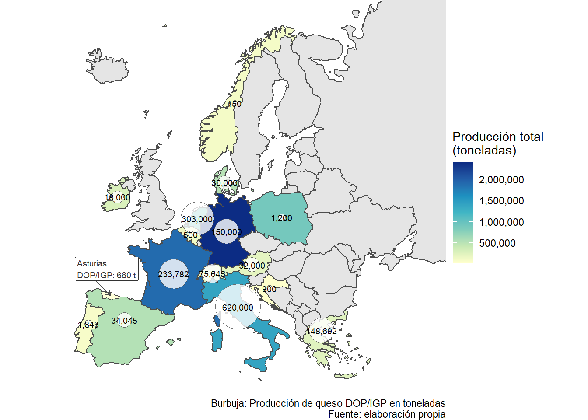
El mayor productor de queso europeo es Alemania; la producción de España es semejante a la de Dinamarca. El mayor productor de queso con DOP o IGP es Italia, gracias al enorme volumen de sus quesos Parmiggiano-Reggiano y Grana Padano. Este país también tiene una gran riqueza de quesos regionales con DOP+IGP (52), a la altura de Francia (57); casi el 50% de su producción quesera está catalogada.
La producción de queso catalogado en Europa es muy superior a la de España y Asturias, tanto en total como en cada variedad. La Tabla 4 nos muestra que varios países tienen un porcentaje significativo de su producción quesera catalogada. Si la estrategia para Asturias es fomentar el desarrollo de productos con valor añadido con apoyo institucional, sin duda es de interés conocer en detalle las experiencias y la estructura del sector en estos países, y la forma en la que se articula el apoyo institucional a los quesos catalogados.
| País | Queso DOP como % de la producción total |
|---|---|
| Grecia | 61,2% |
| Chipre | 51,2% |
| Italia | 44,3% |
| Suiza | 36,0% |
| Paises Bajos | 31,2% |
| Austria | 15,5% |
| Francia | 12,3% |
| España | 6,4% |
| Irlanda | 6,3% |
| Alemania | 6,2% |
| Dinamarca | 5,8% |
| Croacia | 2,8% |
| Asturias | 2,6% |
| Portugal | 2,3% |
| Bélgica | 0,4% |
| Noruega | 0,2% |
| Polonia | 0,1% |
La Figura 7 presenta los quesos europeos con DOP+IGP que hacen más de 10.000 toneladas (recordemos que los quesos asturianos DOP+IGP no alcanzan las 1000 toneladas). La lista está encabezada por un queso holandés, dos italianos, un griego y un francés.
Entre los quesos españoles, sólo aparece en este gráfico el manchego, con 17.000 toneladas anuales, en una posición intermedia. De los quesos asturianos, el primero en la tabla general sería el Cabrales en la posición 103; no llega a mostrarse en el gráfico.
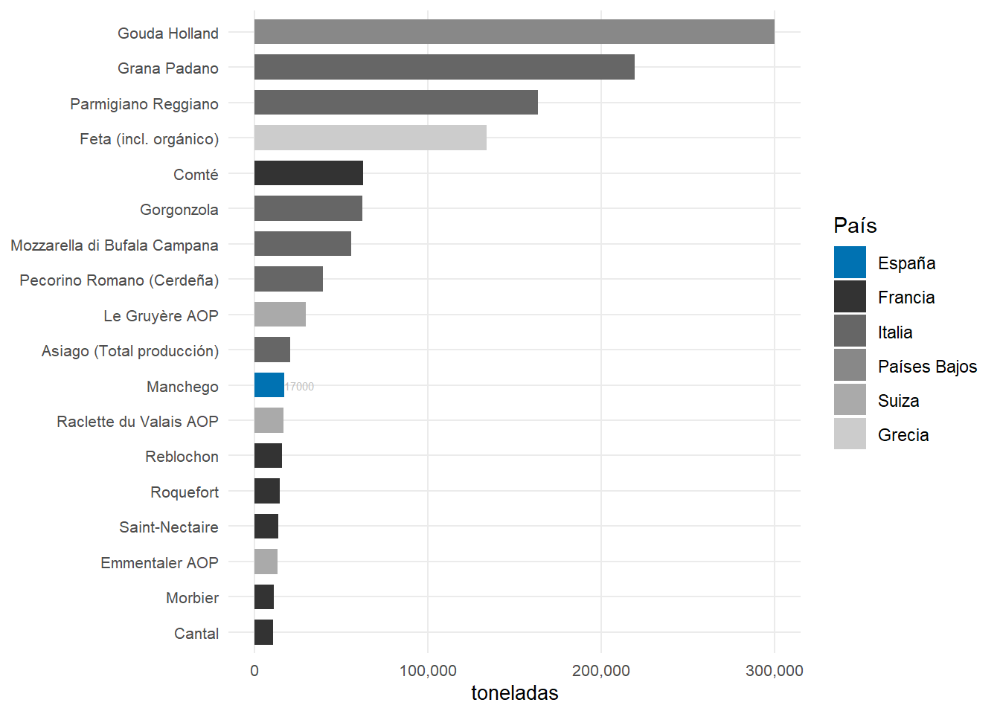
Indices comparativos entre Asturias y Europa
Para comparar la producción de queso en Asturias con la producción total de los países de la UE, puede ser útil establecer índices relativos, como la producción por habitante o por \(km^2\).
Antes de presentar el análisis de estas ratios, es importante señalar que comparar Asturias con países europeos en su totalidad puede dar una visión distorsionada. La producción de queso no es uniforme a lo largo de un país; suele focalizarse en zonas concretas. Si se dispusiera de datos regionales y se comparasen con las áreas queseras asturianas, es probable que las ratios de producción por habitante o por \(km^2\) en otras regiones queseras europeas fueran significativamente mayores. He utilizado las cifras nacionales ante la falta de información regional detallada.}
La Figura 8 presenta los datos de producción de queso en kilogramos por habitante. Los mayores productores de queso de acuerdo a este índice son Dinamarca, Países Bajos e Irlanda; en los quesos DOP+IGP, lo son Países Bajos, Chipre y Grecia, con Italia y Suiza a una distancia moderada. Asturias tiene una producción total por habitante superior a la de Italia, Grecia o Suiza. En cambio, en la producción DOP/IGP, se sitúa casi al final de la lista.
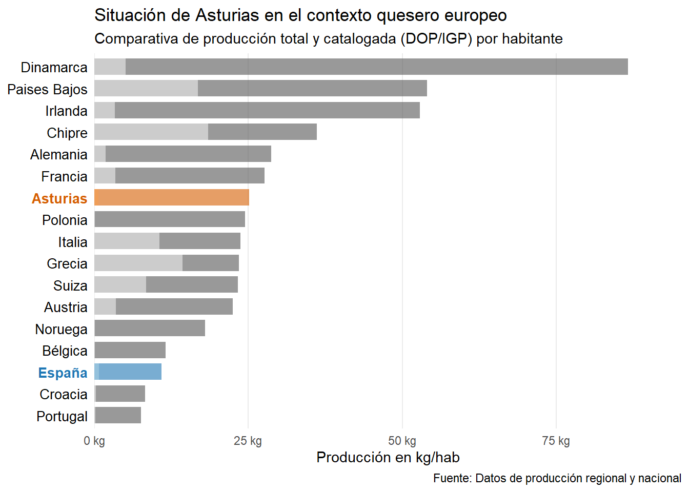
| País | Producción total | Producción DOP+IGP |
|---|---|---|
| Dinamarca | 87,1 | 5,0 |
| Paises Bajos | 54,4 | 16,9 |
| Irlanda | 53,8 | 3,4 |
| Chipre | 29,3 | 15,0 |
| Alemania | 28,4 | 1,8 |
| Francia | 27,9 | 3,4 |
| Asturias | 25,2 | 0,7 |
| Italia | 23,7 | 10,5 |
| Polonia | 23,7 | 0,0 |
| Suiza | 23,6 | 8,5 |
| Grecia | 23,6 | 14,4 |
| Austria | 22,7 | 3,5 |
| Noruega | 18,2 | 0,0 |
| Bélgica | 11,7 | 0,0 |
| España | 11,2 | 0,7 |
| Croacia | 8,1 | 0,2 |
| Portugal | 7,8 | 0,2 |
La Figura 9 presenta la producción de queso por unidad de superficie de la zona considerada (toneladas/\(km^2\)). Destaca la enorme producción de Países Bajos, tanto total como de DOP. En cuanto al total de queso producido, Asturias presenta un índice superior al de Grecia y al promedio de España.
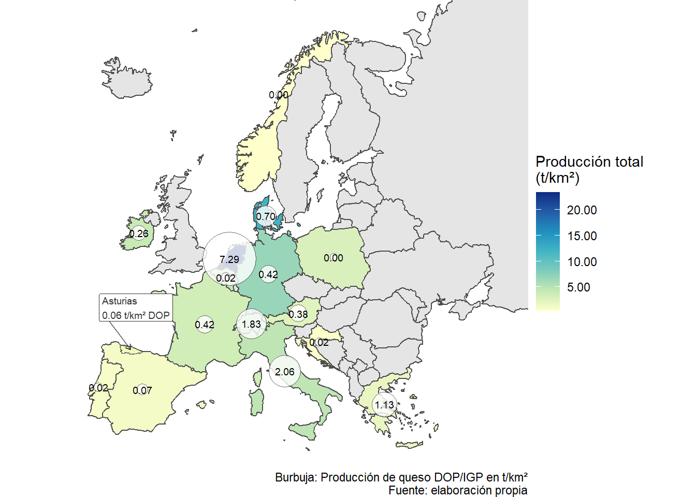
| País | Producción total | Producción DOP+IGP |
|---|---|---|
| Paises Bajos | 23,4 | 7,3 |
| Dinamarca | 12,1 | 0,7 |
| Alemania | 6,7 | 0,4 |
| Suiza | 5,1 | 1,8 |
| Italia | 4,6 | 2,1 |
| Bélgica | 4,5 | 0,0 |
| Irlanda | 4,1 | 0,3 |
| Chipre | 3,8 | 1,9 |
| Francia | 3,4 | 0,4 |
| Polonia | 2,9 | 0,0 |
| Austria | 2,5 | 0,4 |
| Asturias | 2,4 | 0,1 |
| Grecia | 1,8 | 1,1 |
| España | 1,1 | 0,1 |
| Portugal | 0,9 | 0,0 |
| Croacia | 0,6 | 0,0 |
| Noruega | 0,3 | 0,0 |
La Figura 10 muestra la producción media de queso por empresa, total y catalogado. En ambas figuras (Figura 10 (a) y Figura 10 (b)) vemos la pequeña talla de las empresas asturianas.
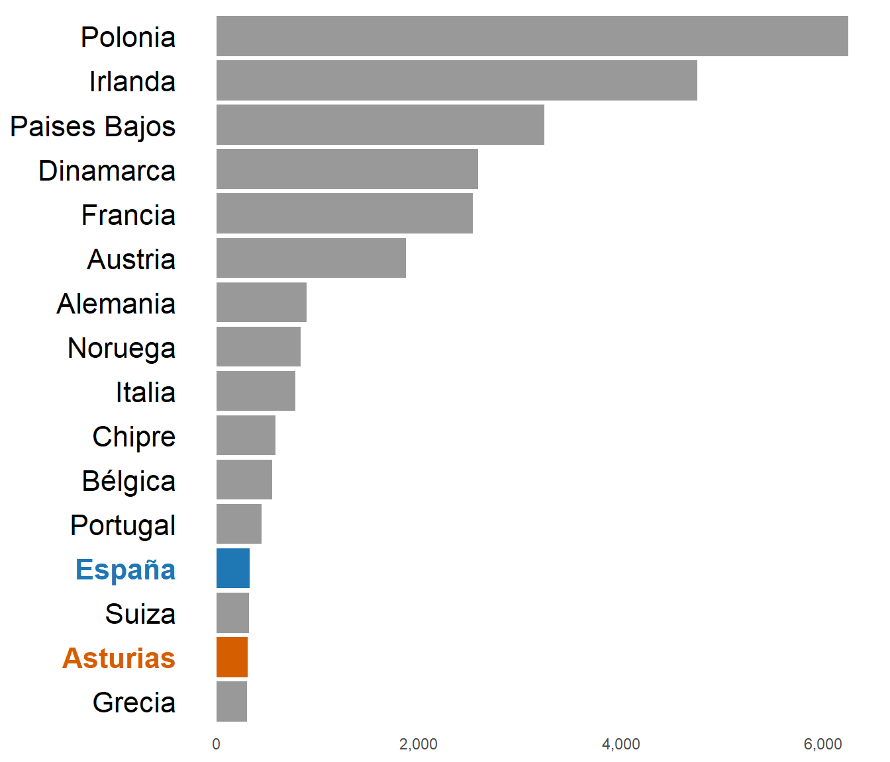
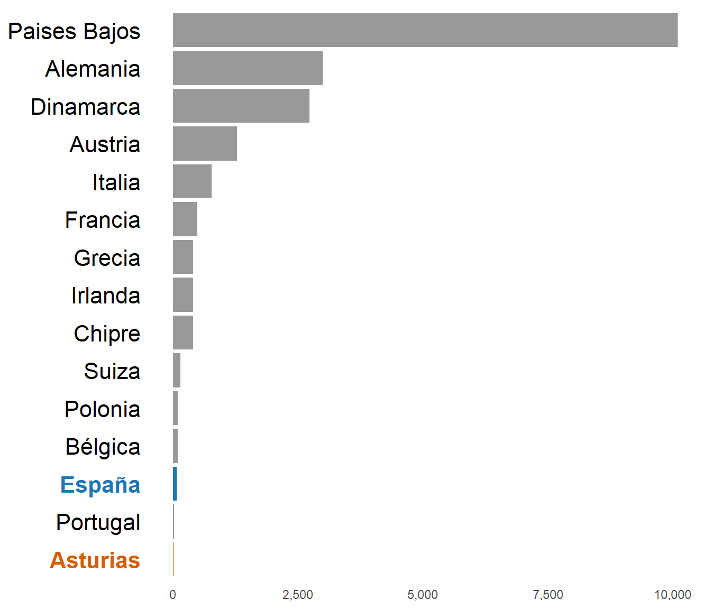
La Figura 11 muestra que Asturias, según los datos disponibles, es la zona quesera de Europa que tiene el mayor número de empresas fabricantes de queso por millón de habitantes entre todas las analizadas, aunque, como hemos visto en la Figura 10, la producción media por empresa está entre las más bajas (recordemos que estamos comparando una región con países completos). Respecto a estas características, Asturias se sitúa cerca de Suiza y Grecia. Este elevado número de empresas en la región podría explicar la afirmación de que Asturias constituye la mayor mancha quesera de Europa, referida al número de empresas y no a la producción total.
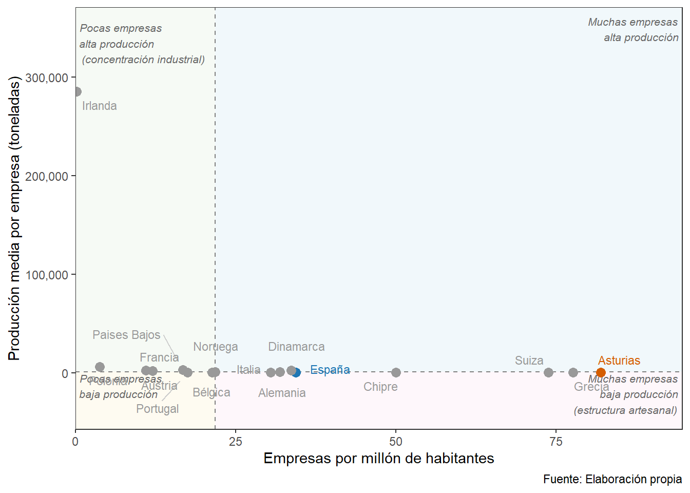
La Figura 12 muestra la implantación de empresas por 1000 \(km^2\), índice que he llamado densidad. La densidad de empresas queseras en la región de Asturias es semejante a la de Alemania, y está entre las más altas de los países considerados, tanto en total como en quesos catalogados.
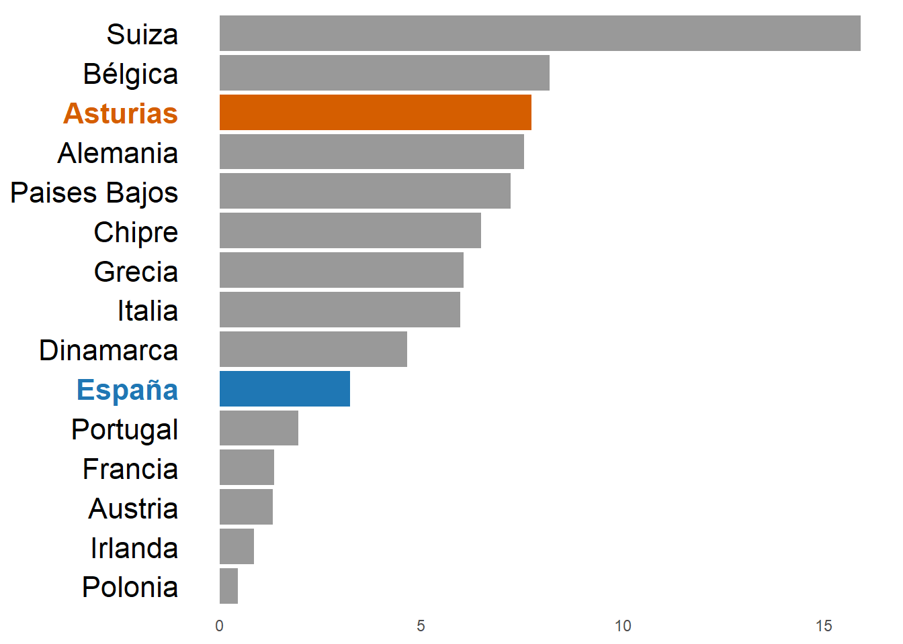
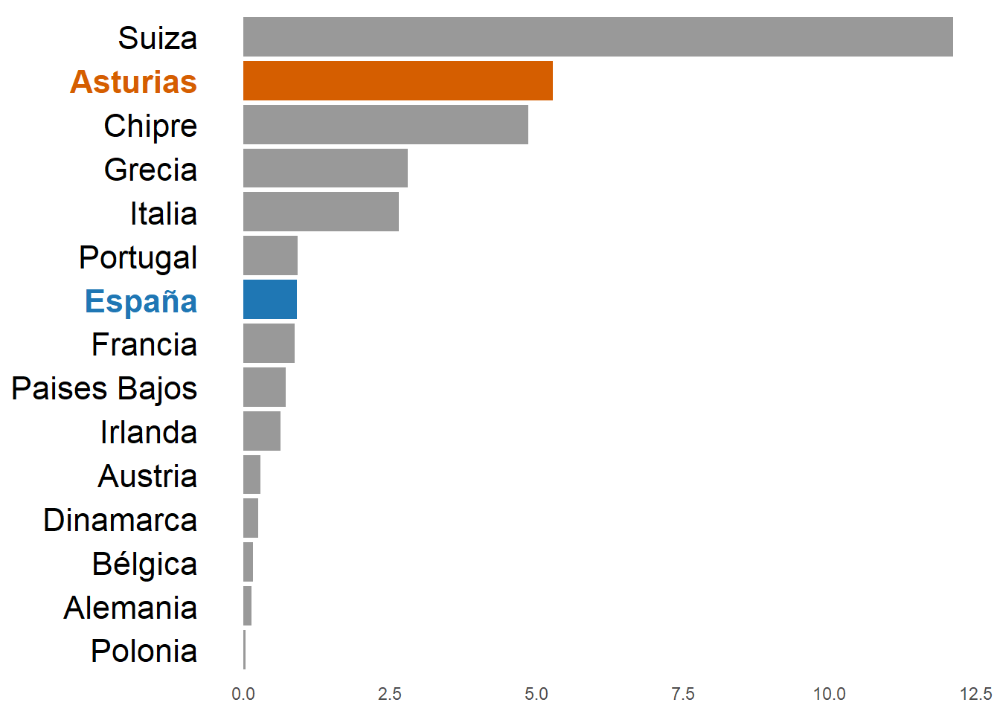
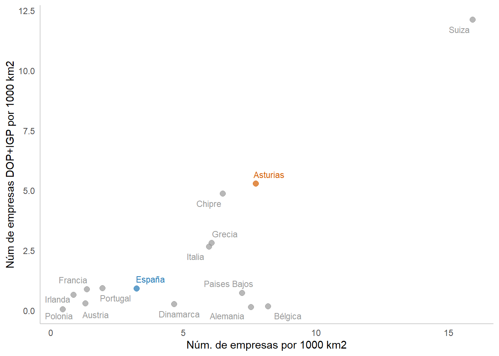
Discusión
Los datos analizados de la producción quesera en Asturias muestran una producción muy diversa. con algunas grandes empresas que elaboran volúmenes importantes de productos genéricos, como quesos frescos, mozzarellas o quesos fundidos (actualmente más del 40% del total de queso elaborado en la región), y un gran número de pequeñas empresas, muchas de ellas artesanales, diseminadas por el territorio, que elaboran productos muy diferentes; en algunos casos se acogen a las figuras existentes de quesos catalogados (DOP e IGP), pero siempre con volúmenes por productor relativamente reducidos.
¿Qué debe considerarse un queso asturiano? ¿Deben incluirse en los quesos asturianos los quesos fabricados en Asturias? Es decir, si en Asturias se instala un fabricante de mozzarella, ¿debe incluirse en ellos la mozzarella? Creo que todos aceptaríamos que este queso hilado es, característicamente, un queso italiano, y no es un queso asturiano aunque esté fabricado en Asturias. Lo mismo ocurre con algunos fabricantes asentados en la región, que fabrican quesos frescos o quesos fundidos que podrían fabricarse en cualquier parte, sin vinculación alguna con el territorio. Su contribución a la economía regional es indudable, pero su vinculación con los atributos distintivos del queso asturiano es escasa o inexistente.
Se podría argumentar que la vinculación se establece a través de la leche utilizada, siempre que sea recogida en Asturias. Sin embargo, la producción lechera regional actual no está enfocada hacia la quesería, ni por las razas utilizadas ni por el tipo de alimentación empleado; una producción que en muchos casos proviene de ganado mantenido en estabulación y alimentado mayoritariamente con heno o con piensos elaborados con ingredientes importados de otras regiones, o incluso de otros países, no proporciona elementos de valor para la fabricación de queso. La mayor parte de la ganadería de Asturias ha evolucionado hacia ganado de carne o hacia el volumen de producción, enfocado a la gran industria láctea de leche envasada, y no se ha trabajado en el desarrollo de las razas de valor añadido para la producción quesera, como se ha hecho en otros países.
La importancia de esta discusión radica precisamente en establecer cuáles son realmente, o deberían ser, estos elementos de valor añadido de los quesos fabricados en Asturias y considerados quesos asturianos. En mi opinión, entre estos elementos están, sin duda, la producción de leche por razas ganaderas locales, la búsqueda de características genéticas que hagan la leche más apta para la fabricación de queso, y una alimentación mayoritariamente de pasto natural o heno obtenido de pastos asturianos. El manejo de los pastos debería favorecer la diversidad florística para aumentar los componentes aromáticos que potencien las notas distintivas en los quesos.
Si Asturias es considerada un Paraíso Natural, deberíamos establecer unas normas de calidad que incluyan los elementos citados, directamente condicionados por el paisaje y el medio natural asturiano, tarea en la que es necesario que se impliquen la administración regional, los Consejos Reguladores y las asociaciones de productores.
La mejora de las capacidades tecnológicas de los queseros y queseras asturianos constituye igualmente un factor clave, tanto para garantizar la regularidad de la calidad como para preservar las características de los quesos tradicionales e impulsar la innovación en los quesos de autor. A través de una formación continua en tecnología quesera, debe perseguirse la mejora de la fabricación, la maduración y el afinado, además de la gestión técnica y económica de las queserías. Sin duda, se trata de un objetivo ambicioso que no puede alcanzarse a corto plazo, pero que debe emprenderse cuanto antes.
La prevalencia de pequeñas producciones, particularmente artesanales, plantea interrogantes sobre la viabilidad económica del sector. La falta de masa crítica dificulta la generación de márgenes de explotación suficientes para garantizar la sostenibilidad de las empresas a medio y largo plazo. A ello se añade la creciente importancia de los aspectos ambientales que incrementa la presión sobre los pequeños elaboradores: una estructura productiva muy repartida en el territorio complica la gestión y eliminación de los residuos generados. Este problema tiene difícil solución sin una cierta concentración de los centros de producción, si tenemos en cuenta, además, los costes de transporte de los residuos en una región tan montañosa como Asturias.
La alta densidad de empresas DOP+IGP que muestra la Figura 12 (b), unida a la baja producción por empresa, que hemos visto en la Figura 10 (b), refleja una característica de los quesos catalogados en Asturias: su producción depende de muchas pequeñas empresas artesanales con volúmenes reducidos. Esto invita a reflexionar sobre las diferencias entre los quesos DOP e IGP y los quesos artesanos; en Europa, muchos quesos con DOP se fabrican a escala industrial o semiindustrial, y su elevado volumen permite una financiación adecuada de los Consejos Reguladores, que disponen de ingresos suficientes para abordar proyectos de mejora de sus productos.
Esta es una discusión compleja en Asturias, porque la distinción entre productos industriales y artesanales sigue siendo objeto de debate y no se ha definido con suficiente claridad. En Asturias, los quesos con certificación DOP o IGP han sido tradicionalmente considerados artesanales, lo que ha limitado su desarrollo dentro de un modelo más amplio de producción; como hemos visto, no es así en el contexto europeo. Podría ser muy interesante para Asturias estudiar la situación de Suiza, también con un gran número de empresas por \(km^2\), y un modelo de promoción de sus productos DOP+IGP altamente exitoso.
Conclusiones
La construcción de diversos índices relativos de la producción quesera asturiana frente a otros países de la Unión Europea permite poner en contexto la situación de los quesos asturianos. El análisis de los datos muestra que Asturias tiene un elevado número de empresas fabricantes de queso (incluyendo las artesanales), y que el volumen medio producido por empresa se encuentra entre los más bajos de las zonas queseras de Europa analizadas.
Es cierto que el valor de la producción de queso no debe establecerse sólo en función del volumen, sino también de su valor añadido. En el caso de Asturias, se podría pensar que la variedad de quesos ofertada es la que genera este valor añadido, además del valor de los productos por sí mismos. Pero hay que tener en cuenta que la elevada cantidad de empresas con una producción reducida genera estructuras de fabricación de escala reducida. En este caso, aunque el valor añadido unitario sea significativo, los recursos generados pueden ser insuficientes para atender inversiones, amortizaciones y gastos de personal, incluyendo aspectos no directamente productivos, como la formación.
Aunque la producción de queso en Asturias es importante, no es superior a la de muchas otras zonas de Europa cuando se compara con países completos. Esta cifra, además, debe matizarse si se tiene en cuenta que una parte significativa de esa producción corresponde a productos sin vinculación con la región más allá de su lugar de fabricación: es el caso de mozzarellas, quesos fundidos y otros, que la última edición del Catálogo general de los quesos elaborados en Asturias1 ya ha excluido del catálogo.
Resulta clave elaborar un plan estratégico que defina y refuerce los atributos distintivos del queso asturiano y apoye tanto a los quesos con certificación DOP e IGP como a los quesos de autor de alta calidad, diferenciando con claridad los quesos catalogados de los quesos artesanos, y facilitando el desarrollo de iniciativas de consolidación que permitan aumentar el tamaño de las queserías asturianas. En este sentido, estudiar otros modelos regionales, como el suizo, puede ser de gran interés.
Anexo: Tabla de quesos europeos catalogados (DOP, IGP o ETG)
| pais | queso | tipo | toneladas | año | leche |
|---|---|---|---|---|---|
| Alemania | Allgäuer Bergkäse | DOP | Vaca | ||
| Allgäuer Emmentaler | DOP | Vaca | |||
| Altenburger Ziegenkäse | DOP | Vaca | |||
| Hessischer Handkäse / Hessischer Handkäs | IGP | Vaca | |||
| Holsteiner Tilsiter | IGP | Vaca | |||
| Nieheimer Käse | IGP | Vaca | |||
| Odenwälder Frühstückskäse | DOP | Vaca | |||
| Bulgaria | Bulgarsko byalo salamureno sirene | DOP | Vaca, oveja, cabra | ||
| Bélgica | Herve / Limburger | DOP | 300 | 2023 | Vaca |
| Dinamarca | Danablu | IGP | Vaca | ||
| Danbo | IGP | Vaca | |||
| Esrom | IGP | Vaca | |||
| Havarti | IGP | Vaca | |||
| España | Acehúche | DOP | 24 | 2023 | Cabra |
| Afuega´l Pitu | DOP | 108 | 2023 | Vaca | |
| Arzúa-Ulloa | DOP | 4.029 | 2023 | Vaca | |
| Cabrales | DOP | 361 | 2023 | Vaca,oveja,cabra | |
| Camerano | DOP | 40 | 2023 | Cabra | |
| Castellano | IGP | 1.493 | 2023 | Oveja | |
| Casín | DOP | 9 | 2023 | Vaca | |
| Cebreiro | DOP | 58 | 2023 | Vaca | |
| Flor de Guía | DOP | 17 | 2023 | Oveja, vaca, cabra | |
| Gamonedo | DOP | 177 | 2023 | Vaca,oveja,cabra | |
| Ibores | DOP | 72 | 2023 | Cabra | |
| Idiazábal | DOP | 1.342 | 2023 | Oveja | |
| La Serena | DOP | 19 | 2023 | Oveja | |
| Los Beyos | IGP | 16 | 2023 | Vaca | |
| L´Alt Urgell y la Cerdanya | DOP | 360 | 2023 | Vaca | |
| Mahón-Menorca | DOP | 3.703 | 2023 | Vaca | |
| Majorero | DOP | 547 | 2023 | Cabra | |
| Manchego | DOP | 17.000 | 2023 | Oveja | |
| Murcia | DOP | 554 | 2023 | Cabra | |
| Murcia al Vino | DOP | 559 | 2023 | Cabra | |
| Nata de Cantabria | DOP | 60 | 2023 | Vaca | |
| Palmero | DOP | 50 | 2023 | Cabra | |
| Picón-Bejes-Tresviso | DOP | 23 | 2023 | Vaca | |
| Quesucos de Liébana | DOP | 2 | 2023 | Vaca | |
| Roncal | DOP | 302 | 2023 | Oveja | |
| San Simón da Costa | DOP | 580 | 2023 | Vaca | |
| Tetilla | DOP | 1.827 | 2023 | Vaca | |
| Torta del Casar | DOP | 357 | 2023 | Oveja | |
| Valdeón | IGP | 150 | 2023 | Vaca | |
| Zamorano | DOP | 191 | 2023 | Oveja | |
| Francia | Abondance | DOP | 3.387 | 2023 | Vaca |
| Banon | DOP | 85 | 2023 | Cabra | |
| Beaufort | DOP | 5.275 | 2023 | Vaca | |
| Bleu d’Auvergne | DOP | 5.277 | 2023 | Vaca | |
| Bleu de Gex Haut-Jura | DOP | 466 | 2023 | Vaca | |
| Bleu des Causses | DOP | 391 | 2023 | Vaca | |
| Bleu du Vercors-Sassenage | DOP | 509 | 2023 | Vaca | |
| Brie de Meaux | DOP | 6.626 | 2023 | Vaca | |
| Brie de Melun | DOP | 189 | 2023 | Vaca | |
| Brillat-Savarin | IGP | 1.874 | 2023 | Vaca | |
| Brocciu | DOP | 407 | 2023 | Oveja | |
| Brousse du Rove | DOP | 16 | 2023 | Cabra | |
| Camembert de Normandie | DOP | 5.410 | 2023 | Vaca | |
| Cancoillotte | IGP | 5.874 | 2023 | Vaca | |
| Cantal | DOP | 10.828 | 2023 | Vaca | |
| Chabichou du Poitou | DOP | 262 | 2023 | Cabra | |
| Chaource | DOP | 2.436 | 2023 | Vaca | |
| Charolais | DOP | 107 | 2023 | Cabra | |
| Chavignol | DOP | 723 | 2023 | Cabra | |
| Chevrotin | DOP | 55 | 2023 | Cabra | |
| Comté | DOP | 62.700 | 2023 | Vaca | |
| Emmental de Savoie | IGP | 2.461 | 2023 | Vaca | |
| Emmental français | IGP | 2.657 | 2023 | Vaca | |
| Epoisses | DOP | 1.468 | 2023 | Vaca | |
| Fourme d’Ambert | DOP | 5.568 | 2023 | Vaca | |
| Fourme de Montbrison | DOP | 639 | 2023 | Vaca | |
| Gruyère | IGP | 2.816 | 2023 | Vaca | |
| Laguiole | DOP | 623 | 2023 | Vaca | |
| Langres | DOP | 614 | 2023 | Vaca | |
| Livarot | DOP | 664 | 2023 | Vaca | |
| Maroilles | DOP | 4.502 | 2023 | Vaca | |
| Mont d’Or | DOP | 5.141 | 2023 | Vaca | |
| Morbier | DOP | 11.185 | 2023 | Vaca | |
| Munster | DOP | 5.776 | 2023 | Vaca | |
| Mâconnais | DOP | 44 | 2023 | Cabra | |
| Neufchâtel | DOP | 1.615 | 2023 | Vaca | |
| Ossau-Iraty | DOP | 4.339 | 2023 | Oveja | |
| Picodon | DOP | 456 | 2023 | Cabra | |
| Pont-l’Evêque | DOP | 2.238 | 2023 | Vaca | |
| Pouligny-Saint-Pierre | DOP | 171 | 2023 | Cabra | |
| Pélardon | DOP | 254 | 2023 | Cabra | |
| Raclette de Savoie | IGP | 3.602 | 2023 | Vaca | |
| Reblochon | DOP | 15.936 | 2023 | Vaca | |
| Rigotte de Condrieu | DOP | 41 | 2023 | Cabra | |
| Rocamadour | DOP | 1.312 | 2023 | Cabra | |
| Roquefort | DOP | 14.436 | 2023 | Oveja | |
| Saint-Marcellin | IGP | 2.742 | 2023 | Vaca | |
| Saint-Nectaire | DOP | 13.834 | 2023 | Vaca | |
| Sainte-Maure de Touraine | DOP | 1.829 | 2023 | Cabra | |
| Salers | DOP | 1.064 | 2023 | Vaca | |
| Selles-sur-Cher | DOP | 1.031 | 2023 | Cabra | |
| Soumaintrain | IGP | 180 | 2023 | Vaca | |
| Tome des Bauges | DOP | 949 | 2023 | Vaca | |
| Tomme de Savoie | IGP | 6.099 | 2023 | Vaca | |
| Tomme des Pyrénées | IGP | 3.232 | 2023 | Vaca | |
| Tomme fraîche de l’Aubrac | IGP | Vaca | |||
| Valençay | DOP | 300 | 2023 | Cabra | |
| Grecia | Anevato (incl. orgánico) | DOP | 18 | 2021 | Oveja, cabra |
| Arseniko Naxou | DOP | 53 | 2021 | Oveja, cabra | |
| Batzos | DOP | 21 | 2021 | Oveja, cabra | |
| Feta (incl. orgánico) | DOP | 134.025 | 2021 | Oveja, cabra | |
| Formaella Arachovas Parnassou | DOP | 4 | 2021 | Oveja, cabra | |
| Galotyri | DOP | 326 | 2021 | Oveja, cabra | |
| Graviera Agrafon | DOP | 1 | 2021 | Oveja | |
| Graviera Kritis | DOP | 3.602 | 2021 | Oveja | |
| Graviera Naxou | DOP | 1.203 | 2021 | Vaca | |
| Kalathaki Limnou | DOP | 413 | 2021 | Oveja | |
| Kasseri (incl. orgánico) | DOP | 2.844 | 2021 | Oveja, cabra | |
| Katiki Domokou | DOP | 870 | 2021 | Oveja, cabra | |
| Kefalograviera | DOP | 2.575 | 2021 | Oveja, cabra | |
| Kopanisti | DOP | 19 | 2021 | Vaca,oveja,cabra | |
| Krasotyri Ko (Tiri tis Possias) | IGP | 1 | 2021 | Vaca,oveja,cabra | |
| Ladotyri Mytilinis (incl orgánico) | DOP | 346 | 2021 | Oveja | |
| Manouri (incl. orgánico) | DOP | 1.819 | 2021 | Suero | |
| Pichtogalo Chanion | DOP | 72 | 2021 | Oveja,cabra | |
| San Mihali | DOP | 58 | 2021 | Vaca | |
| Sfela | DOP | 94 | 2021 | Oveja,cabra | |
| Xigalo Siteias | DOP | 50 | 2021 | Suero | |
| Xinomizithra Kritis | DOP | 278 | 2021 | Oveja,cabra | |
| Irlanda | Imokilly Regato | Vaca | |||
| Italia | Asiago (Total producción) | DOP | 20.433 | 2023 | Vaca |
| Bra INOQ | DOP | 534 | 2024 | Vaca | |
| Caciocavallo Silano | DOP | 1.178 | 2024 | Vaca | |
| Casatella Trevigiana CSQA | DOP | 457 | 2023 | Vaca | |
| Fontina CSQA | DOP | 3.132 | 2023 | Vaca | |
| Gorgonzola | DOP | 62.147 | 2023 | Vaca | |
| Grana Padano | DOP | 219.259 | 2024 | Vaca | |
| Montasio CSQA | DOP | 5.581 | 2024 | Vaca | |
| Monte Veronese CSQA | DOP | 812 | 2023 | Vaca | |
| Mozzarella di Bufala Campana | DOP | 55.718 | 2024 | Búfala | |
| Otros DOP Italia | DOP | 2.208 | 2023 | Vaca | |
| Parmigiano Reggiano | DOP | 163.495 | 2024 | Vaca | |
| Pecorino Romano (Cerdeña) | DOP | 39.244 | 2024 | Oveja | |
| Pecorino Sardo | DOP | 1.741 | 2023 | Oveja | |
| Pecorino Toscano | DOP | 2.954 | 2024 | Oveja | |
| Piave 4 CSQA | DOP | 2.100 | 2024 | Vaca | |
| Provolone Valpadana CSQA | DOP | 7.421 | 2024 | Vaca | |
| Puzzone di Moena CSQA | DOP | 418 | 2024 | Vaca | |
| Quartirolo Lombardo | DOP | 2.629 | 2024 | Vaca | |
| Raschera INOQ | DOP | 592 | 2024 | Vaca | |
| Squacquerone di Romagna | DOP | 2.115 | 2024 | Vaca | |
| Stelvio | DOP | 1.319 | 2023 | Vaca | |
| Taleggio | DOP | 8.694 | 2024 | Vaca | |
| Toma Piemontese INOQ | DOP | 1.329 | 2024 | Vaca | |
| Valtellina Casera CSQA | DOP | 1.660 | 2024 | Vaca | |
| Lituania | Džiugas | IGP | Vaca | ||
| Lietuviškas varškės sūris | IGP | Vaca | |||
| Liliputas | IGP | Vaca | |||
| Países Bajos | Boeren Leidenkaas | DOP | 2024 | Vaca | |
| Boerenkaas | ETG | 2024 | Vaca | ||
| Edam Holland | IGP | 2024 | Vaca | ||
| Gouda Holland | IGP | 300.000 | 2024 | Vaca | |
| Kanterkaas | DOP | 2024 | Vaca | ||
| Nord Holland Edammer | DOP | 2024 | Vaca | ||
| Nord Holland Gouda | DOP | 2024 | Vaca | ||
| Polonia | Bryndza Podhalańska | DOP | Oveja | ||
| Oscypek | DOP | Oveja | |||
| Redykołka | DOP | Oveja | |||
| Ser koryciński swojski | IGP | Vaca | |||
| Wielkopolski ser smażony | IGP | Vaca | |||
| Portugal | Queijo Rabaçal | DOP | 11 | 2019 | Oveja, cabra |
| Queijo S. Jorge | DOP | 1.015 | 2019 | Vaca | |
| Queijo Serpa | DOP | 209 | 2019 | Oveja | |
| Queijo Serra da Estrela | DOP | 129 | 2019 | Oveja | |
| Queijo Terrincho | DOP | 8 | 2019 | Oveja | |
| Queijo amarelo da Beira Baixa | DOP | 78 | 2019 | Oveja, cabra | |
| Queijo de Azeitão | DOP | 242 | 2019 | Oveja | |
| Queijo de Cabra Transmontano | DOP | 9 | 2019 | Cabra | |
| Queijo de Castelo Branco | DOP | 36 | 2019 | Oveja | |
| Queijo de Nisa | DOP | Oveja | |||
| Queijo de Évora | DOP | 71 | 2019 | Oveja | |
| Queijo do Pico | DOP | 0 | 2019 | Vaca | |
| Queijo mestiço de Tolosa | IGP | 2 | 2019 | Oveja,cabra | |
| Queijo picante da Beira Baixa | DOP | 26 | 2019 | Oveja, cabra | |
| Reino Unido | Beacon Fell traditional Lancashire | DOP | 1.650 | Vaca | |
| Bonchester | DOP | Vaca | |||
| Buxton blue | DOP | Vaca | |||
| Dorset Blue | IGP | Vaca | |||
| Dovedale | DOP | Vaca | |||
| Exmoor Blue | IGP | ||||
| Gloucester | DOP | Vaca | |||
| Orkney Scottish Island Cheddar | IGP | ||||
| Staffordshire | DOP | ||||
| Swaledale | DOP | 50 | 2020 | Oveja, vaca | |
| Swaledale ewes´ | DOP | ||||
| Teviotdale | IGP | ||||
| Traditional Ayrshire Dunlop | IGP | ||||
| Traditional Welsh Caerphilly | IGP | ||||
| West Country farmhouse Cheddar | DOP | ||||
| White Stilton; Blue Stilton | DOP | ||||
| Yorkshire Wensleydale | IGP | ||||
| Rep. Checa | Jihočeská Niva | IGP | |||
| Jihočeská Zlatá Niva | IGP | ||||
| Olomoucké tvarůžky | IGP | ||||
| Rumania | Telemea de Ibănești | DOP | Oveja | ||
| Telemea de Sibiu | IGP | Oveja | |||
| Serbia | Homolje cheese (homoljski sir) | IGP | Vaca, oveja, cabra | ||
| Krivi Vir caciocavallo (krivovirski kačkavalj) | IGP | Vaca, oveja, cabra | |||
| Svrljig caciocavallo (svrljiški kačkavalj) | IGP | Vaca | |||
| Slovakia | Oravský korbáčik | IGP | |||
| Slovenská bryndza | IGP | Vaca, oveja,cabra | |||
| Slovenská parenica | IGP | Oveja | |||
| Slovenský oštiepok | IGP | Oveja | |||
| Tekovský salámový syr | IGP | ||||
| Zázrivský korbáčik | IGP | ||||
| Slovenia | Bovški sir | PDO | |||
| Mohant | PDO | ||||
| Nanoški sir | PDO | ||||
| Tolminc | PDO | ||||
| Suecia | Svecia | IGP | Vaca | ||
| Suiza | Appenzeller | DOP | 7.747 | 2023 | Vaca |
| Emmentaler AOP | DOP | 13.390 | 2023 | Vaca | |
| Etivaz AOP | DOP | 450 | 2023 | Vaca | |
| Le Gruyère AOP | DOP | 29.344 | 2023 | Vaca | |
| Raclette du Valais AOP | DOP | 16.711 | 2023 | Vaca | |
| Sbrinz AOP | DOP | 1.532 | 2023 | Vaca | |
| Tête de Moine AOP | DOP | 3.048 | 2023 | Vaca | |
| Vacherin Friburgeois AOP | DOP | 2.922 | 2023 | Vaca | |
| Vacherin Mont-d’Or AOP | DOP | 501 | 2023 | Vaca |
Referencias y fuentes consultadas
1.
Bonal EC. Catálogo general de quesos elaborados en Asturias (Vadequesum), 4ª ed. Consejería de Medio Rural y Política Agraria del Principado de Asturias; 2026.
2.
Ministerio de Agricultura, Pesca y Alimentación (MAPA). Anuario Estadística 2023 [Internet]. Ministerio de Agricultura, Pesca y Alimentación (MAPA); 2023 p. 158. Disponible en: https://www.mapa.gob.es/estadistica/pags/anuario/2023/FORMATO%20PDF/AE23-C06/CAP%C3%8DTULO%206.pdf
3.
Agencia de Ciencia CEeIA(SEKUENS). El sector lácteo en Asturias. Facturación y empleo [Internet]. 2026 [citado abril de 2025]. Disponible en: https://www.idepa.es/conocimiento/flash-sectorial/sector-lacteo/el-sector-en-asturias/facturacion-y-empleo
4.
Sociedad Asturiana de Estudios Económicos e Industriales [Internet]. 2025 [citado 28 de abril de 2025]. Disponible en: https://www.sadei.es
5.
La Voz de Asturias. Danone plantea el cierre total de Salas y llevarse la producción a Francia [Internet]. 2022 [citado 10 de marzo de 2022]. Disponible en: https://www.lavozdeasturias.es/noticia/asturias/2022/05/10/danone-plantea-cierre-total-salas-llevarse-produccion-francia/00031652209254188778914.htm
6.
Ministerio de Agricultura, Pesca y Alimentación (MAPA). Cuadro B: Resultados de la Encuesta Anual de Industrias Lácteas. Año 2024. [Internet]. Ministerio de Agricultura, Pesca y Alimentación (MAPA); 2024. Disponible en: https://www.mapa.gob.es/dam/mapa/contenido/estadisticas/temas/estadisticas-agrarias/3.ganaderia/estadistica-lactea/estadistica-lactea-anual/2024/cuadros_b-h_2024_web.pdf
7.
Ministerio de Agricultura, Pesca y Alimentación (MAPA). Informe del consumo alimentario en España [Internet]. Ministerio de Agricultura, Pesca y Alimentación (MAPA); 2023. Disponible en: https://www.mapa.gob.es/es/alimentacion/temas/consumo-tendencias/informe_2023_alta_tcm30-685877.pdf
8.
Ministerio de Agricultura, Pesca y Alimentación (MAPA). Datos de las Denominaciones de Origen Protegidas (D.O.P.), Indicaciones Geográficas Protegidas (I.G.P.) y Especialidades Tradicionales Garantizadas (E.T.G.) de Productos Agroalimentarios [Internet]. Ministerio de Agricultura, Pesca y Alimentación (MAPA); 2023 p. 26. Disponible en: https://www.mapa.gob.es/es/alimentacion/temas/calidad-diferenciada/informedop_igp_2023_tcm30-699649.pdf
9.
Ministerio de Agricultura, Pesca y Alimentación (MAPA). Diagnóstico y Análisis Estratégico del Sector Agroalimentario Español. Análisis de la cadena de producción y distribución del sector de lácteos. Resumen ejecutivo [Internet]. Ministerio de Agricultura, Pesca y Alimentación; Disponible en: https://www.mapa.gob.es/es/alimentacion/temas/consumo-tendencias/resumen_lacteos_tcm30-89503.pdf
10.
Eurostat. Milk collection (all milks) and dairy products obtained - annual data [Internet]. 2024. Disponible en: https://ec.europa.eu/eurostat/databrowser/view/APRO_MK_POBTA__custom_2750342/default/table?lang=en
11.
Conseil National des Appellations d’Origine Laitières(CNAOL). Chiffres clé de la production fromagère [Internet]. Institute National de l’Origine et de la Qualite; 2024. Disponible en: https://www.inao.gouv.fr/sites/default/files/2024-10/Cnaol_Chiffres_Cles_2024_0.pdf
12.
Clal. Italia: Produzioni di Formaggi DOP [Internet]. 2024 [citado]. Disponible en: https://www.clal.it/?section=formaggi_dop
13.
Switzerland Cheese Marketing SA (SCM). Le marché du fromage suisse [Internet]. Switzerland Cheese Marketing SA (SCM); 2024. Disponible en: https://www.inao.gouv.fr/sites/default/files/2024-10/Cnaol_Chiffres_Cles_2024_0.pdf
14.
Statistiek CB voor der. The Netherlands in numbers: how much cheese do we produce? [Internet]. 2022 [citado]. Disponible en: https://longreads.cbs.nl/the-netherlands-in-numbers-2022/how-much-cheese-do-we-produce/
15.
Board DD. Danish PGI cheeses [Internet]. 2024 [citado]. Disponible en: https://danishdairyboard.dk/products/danish-pgi-cheeses/
16.
Wikipedia the free encyclopedia. List of European cheeses with protected geographical status [Internet]. 2025. Disponible en: https://en.wikipedia.org/wiki/List_of_European_cheeses_with_protected_geographical_status
17.
Bonal EC. Catálogo general de quesos elaborados en Asturias (Vadequesum) [Internet]. Consejería de Medio Rural y Cohesión Territorial del Principado de Asturias; 2023. Disponible en: https://descargas.asturias.es/asturias/agroalimentacion/catalogo-quesos-asturias-20230922.pdf
18.
Díaz R. La producción de queso de Cabrales se estanca por falta de relevo generacional: "Veo el futuro bastante negro" [Internet]. 2025 [citado 1 de febrero de 2025]. Disponible en: https://www.lne.es/oriente/2025/02/01/produccion-queso-cabrales-estanca-falta-113889273.html
19.
Díaz R. El queso de Gamonéu bate su récord histórico de producción: 181.416 kilos en 2024 [Internet]. 2025 [citado 1 de febrero de 2025]. Disponible en: https://www.lne.es/oriente/2025/02/21/queso-gamoneu-bate-record-historico-114530598.html
20.
Orihuela D. El queso casín, "con muchísimo futuro" y ventas en auge, busca nuevos productores [Internet]. 2024 [citado 27 de agosto de 2024]. Disponible en: https://www.lne.es/cuencas/2024/08/27/queso-casin-futuro-ventas-auge-107388576.html
21.
La Voz de Asturias. 2024 [citado 10 de marzo de 2022]. Disponible en: https://www.lavozdeasturias.es/noticia/gastronomia/2022/03/10/queso-casin-aumento-produccion-67-2021/00031646927293530362721.htm
22.
Instituto Nacional de Estadística de España. Estadística continua de población para el 1 de enero de 2025 [Internet]. 2025 [citado 1 de enero de 2025]. Disponible en: https://www.lavozdeasturias.es/noticia/gastronomia/2022/03/10/queso-casin-aumento-produccion-67-2021/00031646927293530362721.htm
23.
Moul R. Use Of Facts And Evidence-Based Rhetoric At All-Time Low In Congressional Speech [Internet]. 2025 [citado 11 de abril de 2025]. Disponible en: https://www.iflscience.com/use-of-facts-and-evidence-based-rhetoric-at-all-time-low-in-congressional-speech-78785
24.
Pappa EC, Kondyli E. Descriptive Characteristics and Cheesemaking Technology of Greek Cheeses Not Listed in the EU Geographical Indications Registers. Dairy [Internet]. 2023;(4):43-67. Disponible en: https://doi.org/10.3390/dairy4010003
25.
Alimentos de España. Buscador quesos y catálogo electrónico de los quesos de España [Internet]. 2025 [citado]. Disponible en: https://www.alimentosdespana.es/es/estrategia-alimentos-espana/gastronomia/bloc/quesos/buscador-quesos?page=2&ccaa=ed3452da-7e56-4be0-89df-09553685ab6d&procedencia=0&calidad=0